- Human-centered robotics & Human–Robot Interaction (HRI)
- Haptics
- Exoskeletons and assistive robotic systems
- Imitation Learning & AI for robotics
STATUS — Available for R&D positions from October 2026
Robotics Engineer · AI for Robotics
Nacim TALAOUBRID
Robotics Engineering student at Polytech Sorbonne and Master's student at Sorbonne University, specializing in Artificial Intelligence applied to Robotics.
I develop intelligent robotic systems by combining robot learning and robot control. I am currently conducting my final-year internship at ISIR, where I work on imitation learning methods for robotic manipulation
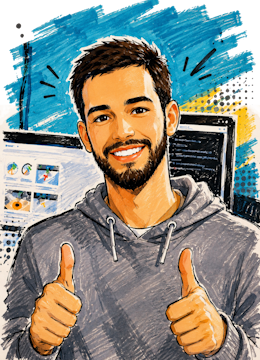
FIG. 01 — It's me
01 — Education
Education
My Robotics Engineering degree at Polytech Sorbonne gave me a strong foundation in robotics, AI, and embedded systems.
Looking to apply these skills to meaningful real-world challenges, I pursued a dual degree with the Master's in Mechatronic Systems for Rehabilitation (MSR) at Sorbonne University.
There, I discovered human-centered robotics and AI through projects in human-robot interaction, haptics, and imitation learning, confirming my interest in developing intelligent robotic systems that assist and collaborate with people.
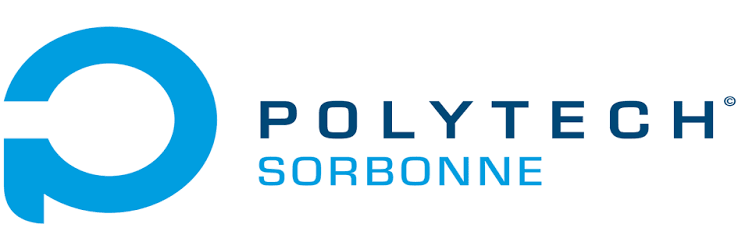
- Artificial Intelligence & Computer Vision
- Control engineering
- Mechanics & CAD (SolidWorks)
- Software development (Python, C/C++, ROS 2)
- Mobile robotics
02 — Expérience professionnelle
Professional Experience
2026
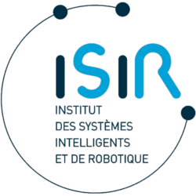

2026 • France
Final-Year Internship
ISIR - Sorbonne University
Developed autonomous manipulation capabilities for dexterous hand equipped with tactile sensors and investigate the role of tactile sensing in learning-based control.
More details →2024
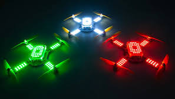
2024 • Italy
Technical Internship
LuminousBEE
Developed Python-based Blender plugins to automate and streamline the creation of drone light show choreographies. Contributed to the SFIDA project focused on autonomous drone systems for photogrammetric inspection.
More details →2023

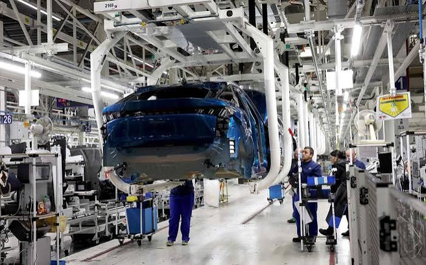
2023 • France
Production Internship
Stellantis
Participated in vehicle assembly operations on the Peugeot 5008 and Citroën C5 production lines.
More details →2022
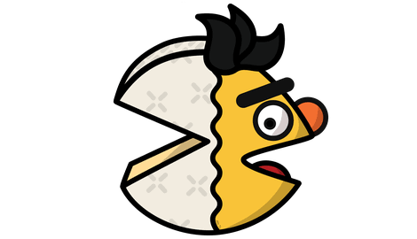
2022 • France
Research Discovery Internship
INRIA
Research internship within a Natural Language Processing (NLP) team focused on Named Entity Recognition in noisy text data.
More details →03 — Academic projects
Some examples
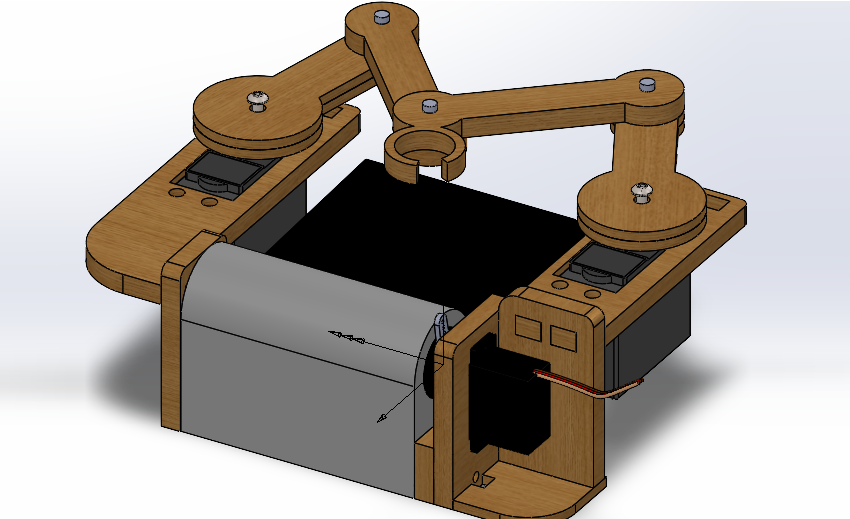
Robotics
Robotic Writing System
Designed a full robotic writing system combining mechanical design, actuation, and control.
More details →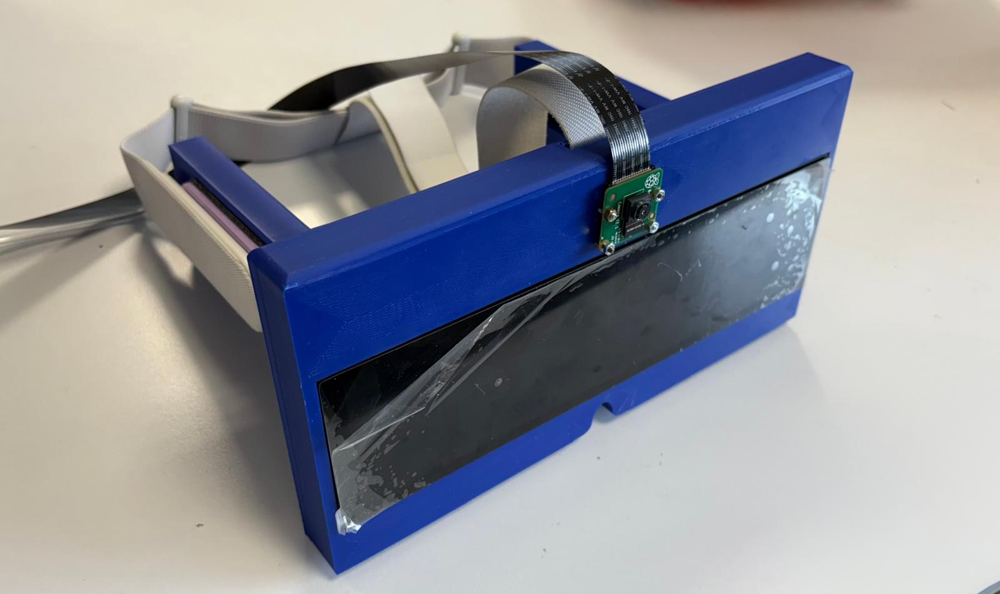
Human-Centered AI
Smart Glasses for Emotion Recognition
Assistive wearable system combining computer vision and haptic feedback to support emotion awareness in real time.
More details →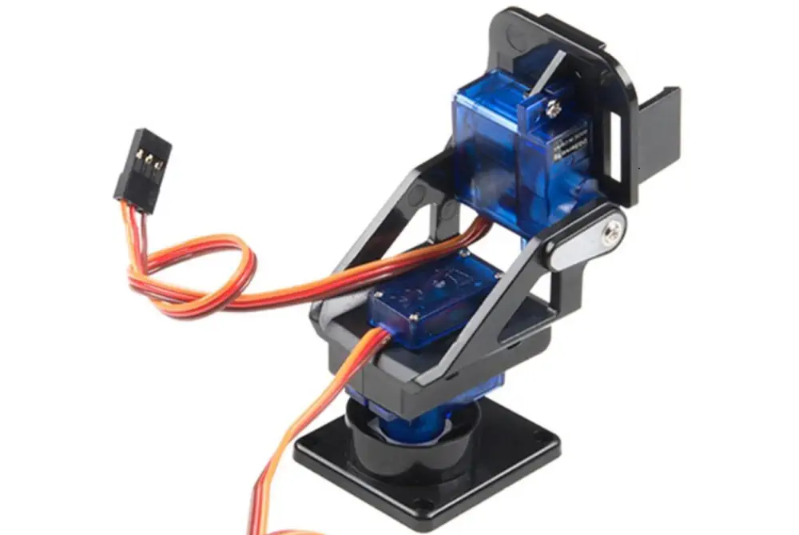
Computer Vision
Real-Time Object Tracking System
OpenCV-based system for real-time detection and tracking of a colored object with closed-loop motor control.
More details →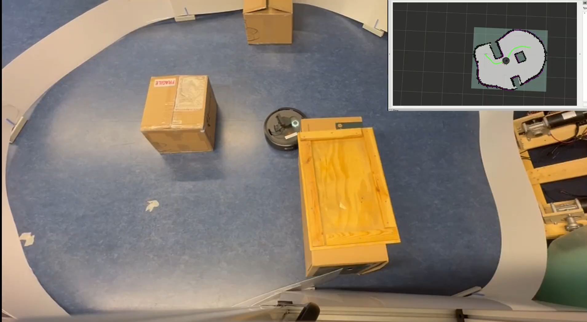
Autonomous Navigation
Autonomous Mobile Robot Navigation
ROS 2 navigation system featuring SLAM-based mapping, path planning, obstacle avoidance, and autonomous return-to-home.
More details →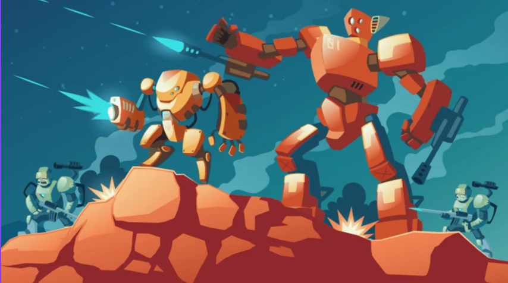
Game Development
Robot Tanks
Video game developed in C++ with SFML and an object-oriented architecture.
More details →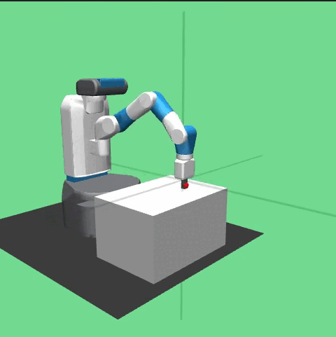
Robot Learning
DAgger for Robotic Imitation Learning
Implementation and evaluation of DAgger on the FetchReach-v4 robotic environment using human, PID, and reinforcement learning experts.
More details →04 — Contact